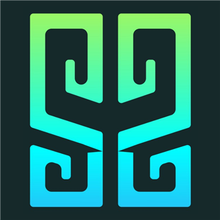

Line the picture up with the view in front of you.

Audio stories and AR points along the trails of Barbados.
CHOOSE YOUR TRAIL
Use headphones if you can, keep your volume up, and stay aware of traffic and uneven ground as you walk. Tap a trail to begin; you will be asked to allow location access so the app knows when you reach each point.
Audio plays while this page is open. If you lock your screen, your phone may pause it — keep the screen on for the best experience.
GPS can be off by 5–15 metres. If a point does not unlock, move a few steps and wait a few seconds. Points unlock when you are close; you can also open any point you have already visited.